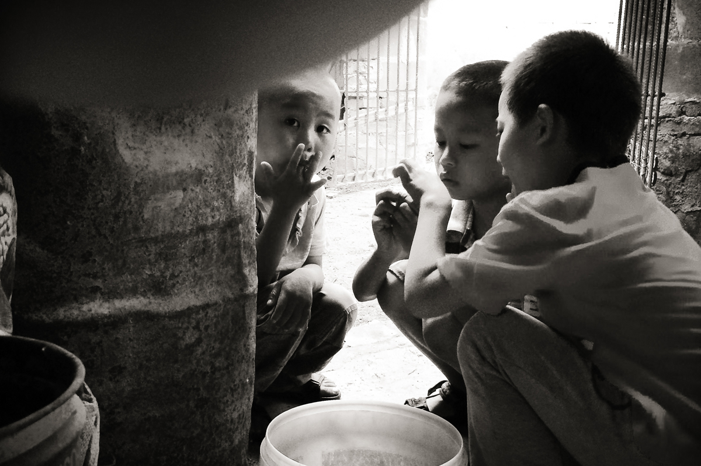

<html>
    <head>
        <meta charset="utf-8">
        <meta http-equiv="X-UA-Compatible" content="IE=edge">
        <title>Believe in Mighty God</title>
        <meta name="description" content="">
        <meta name="viewport" content="width=device-width, initial-scale=1">
        <link rel="stylesheet" href="css/main.css">
        <link rel="stylesheet" type="text/css" href="css/bootstrap.css">
        <link href='https://fonts.googleapis.com/css?family=Old+Standard+TT:700,400italic,400' rel='stylesheet' type='text/css'>
    </head>
    <body>

      <!---<div class="row">
          <div class="col-sm-4" >
              
          </div>
          <div class="col-sm-4">
              
          </div>
          <div class="col-sm-4">
            
          </div>
      </div>--->


    <!---<h2>BELIEVE IN MIGHTY GOD</h2>
    <h4> Photo essay by Muyi Xiao</h4>--->

<div class='images'>

<div class='pic1'>
  <a href="http://www.muyixiao.com/?fluxus_portfolio=believe-in-mighty-god">
  

</div>


<div class='pic2'>
  <a href="http://www.muyixiao.com/?fluxus_portfolio=believe-in-mighty-god">


</div>

<div class='pic3'>
  <a href="http://www.muyixiao.com/?fluxus_portfolio=believe-in-mighty-god">


</div>


</div>


</body>
<script src="js/jquery-2.2.0.min.js"></script>
<script src="js/typed.js"></script>
<div class='typing'>

<script>
    $(function(){
        $(".element").typed({
            strings: ["所有看見我話的人是否真接受我的話語？你們對我是否真有認識？是否真學會了順服？是否是真心為我花費？是否真為我在大紅龍面前作了剛強有力的見證？你們 的忠心是否真是羞辱大紅龍的？正是我話語的試煉，才能達到我潔淨教會、揀選真心愛我的人的目的。若我不這樣作工，能有誰認識我呢？有誰能從我的話中認識我的 威嚴、烈怒，認識我的智慧呢？我既開工，也必完工，但測人肺腑時仍是我。說實在話，在人沒有一個完全認識我的，所以我用話語來引導所有的人，用話語來帶領所 有的人進入新的時代，最終我要用話語來成就我所有的工作，使所有真心愛我的人歸服我國，存活在我的寶座之前。現在已不是以往的景況，我的工作又進入一個新的 起點。既說進入新的起點，便有新的方式：看見我話而且接受我話作生命的人都是在我國中的人，既在我國中，便是我國中的子民，因著接受我話語的帶領，所以雖稱 子民，卻並不亞於「兒子」這一稱呼。既是做子民的，那所有的人都得在我國中盡忠，在我國中盡本分，凡觸犯我行政的都得接受我的懲罰，這是我對所有人的忠告。今天進入新的方式，那些以往的事就不便再提，但我說過這樣的話，我既說必算，既算必成，誰也改變不了，這是絕對的。不管以往說過的話還是以後說的話都得 一一應驗，而且讓所有的人都看見，這是我說話作工的原則。教會建造的工作既已成就，那現在就不是教會建造時代，而是國度建造成功之時，但因著你們仍在地，所 以在地之人的集合仍稱之為「教會」。但說其本質已不同以往，是建造成功的教會，因此我說國度已降臨在地上。我的話語誰也摸不著根源，誰也不知我說話的目的。但我說過這樣的話，我既說必算，既算必成，誰也改變不了，這是絕對的。不管以往說過的話還是以後說的話都得 一一應驗，而且讓所有的人都看見，這是我說話作工的原則。教會建造的工作既已成就，那現在就不是教會建造時代，而是國度建造成功之時，但因著你們仍在地，所 以在地之人的集合仍稱之為「教會」。但說其本質已不同以往，是建造成功的教會，因此我說國度已降臨在地上。我的話語誰也摸不著根源，誰也不知我說話的目的。", "BELIEVE IN MIGHTY GOD <br> by Muyi Xiao"],
            typeSpeed: 0
        });
    });
</script>


<span class="element"></span>
</div>
</html>
